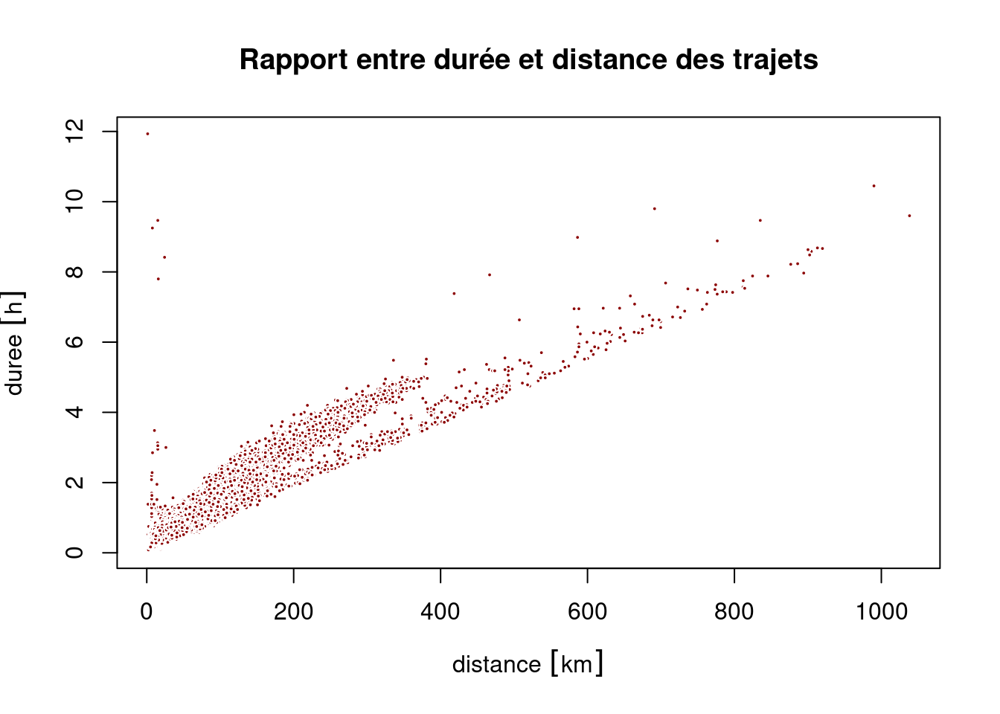
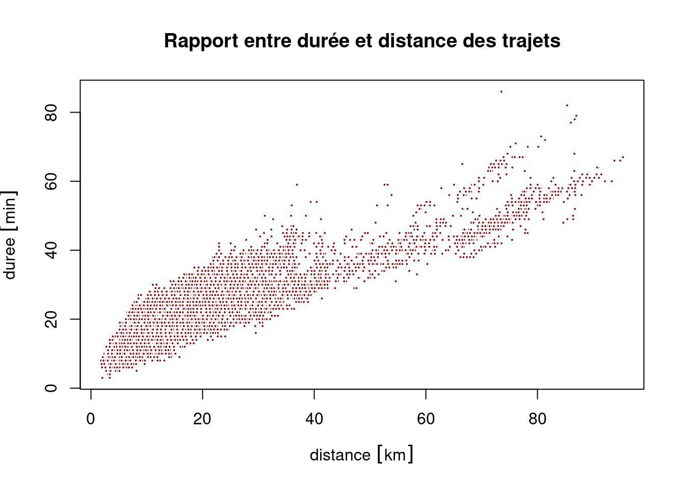

dir.create("data-raw")
cov_2022_11 <- "https://www.data.gouv.fr/fr/datasets/r/5d469743-9636-4e84-841c-2ae1111b4009"
cov_2022_10 <- "https://www.data.gouv.fr/fr/datasets/r/80b38046-8166-49fd-bbee-fc0ba9612a88"
cov_2022_09 <- "https://www.data.gouv.fr/fr/datasets/r/513862ee-8e8e-426b-9b67-7a4e39ab253a"
download.file(cov_2022_11, destfile = "data-raw/cov_2022_11.csv")
download.file(cov_2022_10, destfile = "data-raw/cov_2022_10.csv")
download.file(cov_2022_09, destfile = "data-raw/cov_2022_09.csv")Faire des cartes avec le logiciel libre R
Journée d’étude ‘La boîte à outils de cartographie et de géovisualisation de données : regards croisés de chercheurs’
Timothée Giraud ![]()
1 Introduction
Historique et principes de l’outil utilisé
Fonctionnalités principales
Usages actuels (montrer quelques supers exemples)
Vos usages de cet outil (quelques exemples de vos réalisations)
Préparation des données
Modes de représentations (cartes et graphiques)
Mode d’interactions avec les données
Usages potentiels qu’on a pas eu le temps d’explorer
Bilan personnel de l’outil (forces et limites) dans l’offre actuelle
2 Préparation des données
2.1 Téléchargement des données
2.2 Import des données
cov_raw_1 <- read.csv(file = "data-raw/cov_2022_09.csv", sep = ";")
cov_raw_2 <- read.csv(file = "data-raw/cov_2022_10.csv", sep = ";")
cov_raw_3 <- read.csv(file = "data-raw/cov_2022_11.csv", sep = ";")
cov_raw <- rbind(cov_raw_1, cov_raw_2, cov_raw_3)2.3 Découverte du jeu de données
nrow(cov_raw)[1] 1789222ncol(cov_raw)[1] 27names(cov_raw) [1] "journey_id" "trip_id"
[3] "journey_start_datetime" "journey_start_date"
[5] "journey_start_time" "journey_start_lon"
[7] "journey_start_lat" "journey_start_insee"
[9] "journey_start_department" "journey_start_town"
[11] "journey_start_towngroup" "journey_start_country"
[13] "journey_end_datetime" "journey_end_date"
[15] "journey_end_time" "journey_end_lon"
[17] "journey_end_lat" "journey_end_insee"
[19] "journey_end_department" "journey_end_town"
[21] "journey_end_towngroup" "journey_end_country"
[23] "passenger_seats" "operator_class"
[25] "journey_distance" "journey_duration"
[27] "has_incentive" head(cov_raw, 1) journey_id trip_id journey_start_datetime
1 8481314 c63637d5-e8d4-4772-a350-9682191f73ef 2022-09-01T00:00:00+02:00
journey_start_date journey_start_time journey_start_lon journey_start_lat
1 2022-09-01 00:00:00 1.071 49.444
journey_start_insee journey_start_department journey_start_town
1 76540 76 Rouen
journey_start_towngroup journey_start_country journey_end_datetime
1 Métropole Rouen Normandie France 2022-09-01T00:40:00+02:00
journey_end_date journey_end_time journey_end_lon journey_end_lat
1 2022-09-01 00:40:00 0.966 49.276
journey_end_insee journey_end_department journey_end_town
1 27638 27 Le Thuit de l'Oison
journey_end_towngroup journey_end_country passenger_seats operator_class
1 CC Roumois Seine France 1 C
journey_distance journey_duration has_incentive
1 25476 40 OUI2.4 Nettoyage
Suppression des trajets sans durée ni distance renseignées
cov <- cov_raw[cov_raw$journey_distance != 0 &
cov_raw$journey_duration != 0, ]3 Analyses
3.1 Analyse des durées, distances et vitesses
3.1.1 Calcul des indicateurs, gestion des unités de mesure
duree <- cov$journey_duration
distance <- cov$journey_distance
library(units)udunits database from /usr/share/xml/udunits/udunits2.xmlunits(distance) <- "m"
units(duree) <- "min"
distance <- set_units(distance, "km")
duree <- set_units(duree, "h")
vitesse <- distance / duree3.1.2 Représentations
summary_table <- data.frame(
rbind(summary(duree),
summary(distance),
summary(vitesse)),
row.names = c("Durée (h)", "Distance (km)", "Vitesse (km/h)"),
check.names = FALSE
)
knitr::kable(summary_table, digits = 1)| Min. | 1st Qu. | Median | Mean | 3rd Qu. | Max. | |
|---|---|---|---|---|---|---|
| Durée (h) | 0 | 0.3 | 0.4 | 0.5 | 0.6 | 11.9 |
| Distance (km) | 0 | 10.1 | 20.2 | 24.9 | 33.1 | 1038.4 |
| Vitesse (km/h) | 0 | 33.2 | 44.5 | 46.6 | 58.2 | 184.4 |
hist(duree)
hist(distance)
hist(vitesse)


plot(x = distance, y = duree,
main = "Rapport entre durée et distance des trajets",
pch = 21, cex = .4, col = "white", bg = "darkred")
plot(x = distance, y = vitesse,
main = "Rapport entre vitesse et distance des trajets",
pch = 21, cex = .4, col = "white", bg = "darkblue")
abline(h = 80, lty = 2, lwd = .5)
abline(h = 110, lty = 2, lwd = .5)
3.2 Zoom sur la Haute-Garonne
3.2.1 Sélection des données
Nous sélectionnons les trajets depuis ou vers la Haute-Garonne (31) de moins de 100 km.
dep <- 31
covdep <- cov[cov$journey_start_department %in% dep &
cov$journey_distance <= 100000 &
cov$journey_duration <= 150, ]3.2.2 Calcul des indicateurs, gestion des unités de mesure
duree <- covdep$journey_duration
distance <- covdep$journey_distance
library(units)
units(distance) <- "m"
units(duree) <- "min"
distance <- set_units(distance, "km")
vitesse <- distance / duree
vitesse <- set_units(vitesse, "km/h")3.2.3 Représentations
summary_table <- data.frame(
rbind(summary(duree),
summary(distance),
summary(vitesse)),
row.names = c("Durée (m)", "Distance (km)", "Vitesse (km/h)"),
check.names = FALSE
)
knitr::kable(summary_table, digits = 1)| Min. | 1st Qu. | Median | Mean | 3rd Qu. | Max. | |
|---|---|---|---|---|---|---|
| Durée (m) | 3.0 | 16.0 | 22.0 | 24.3 | 30.0 | 86.0 |
| Distance (km) | 1.8 | 9.8 | 15.8 | 22.3 | 27.2 | 95.3 |
| Vitesse (km/h) | 13.4 | 34.1 | 44.6 | 49.8 | 62.5 | 110.8 |
hist(duree, breaks = seq(0,max(as.numeric(duree))+1,1))
hist(distance, breaks = seq(0,100,1))
hist(vitesse, breaks = seq(0,max(as.numeric(vitesse)+1),1))


plot(x = distance, y = duree,
main = "Rapport entre durée et distance des trajets",
pch = 21, cex = .4, col = "white", bg = "darkred") 
plot(x = distance, y = vitesse,
main = "Rapport entre vitesse et distance des trajets",
pch = 21, cex = .4, col = "white", bg = "darkblue")3.2.4 Récupération de trajets théoriques
Nous utilisons le package osrm.
Cette fonction est utile pour demander une grande quantité de routes.
Elle nécessite d’avoir accès à un serveur OSRM.
Show the code
get_routes <- function(x,
srcX = "srcx", srcY = "srcy",
dstX = "dstx", dstY = "dsty",
ncl = 5){
ny <- nrow(x)
sequence <- unique(c(seq(1, ny, 500), ny + 1))
lseq <- length(sequence) - 1
ml <- list()
for (i in 1:lseq) {
ml[[i]] <- x[(sequence[i]):(sequence[i + 1] - 1),
c(srcX, srcY, dstX, dstY)]
}
cl <- parallel::makeCluster(ncl)
doParallel::registerDoParallel(cl,)
roads <- foreach::`%dopar%`(
foreach::foreach(
ml = ml,
.packages = c("osrm", "sf"),
.combine = rbind,
.inorder = FALSE
),
{
l <- vector("list", nrow(ml))
for( i in seq_along(l)){
l[[i]] <- osrmRoute(src = ml[i, c(srcX, srcY)],
dst = ml[i, c(dstX, dstY)],
osrm.server = "http://0.0.0.0:5000/",
osrm.profile = "car",
overview = "full")
}
l <- do.call(rbind, l)
l
}
)
parallel::stopCluster(cl)
roads
}Pour la réutilisation nous enregistrons les routes
roads <- get_routes(x = covdep,
srcX = "journey_start_lon",
srcY = "journey_start_lat",
dstX = "journey_end_lon",
dstY = "journey_end_lat",
ncl = 7)
library(sf)
st_write(obj = roads,
dsn = "data/road.gpkg",
layer = paste0("road_",dep),
append = FALSE)
roads <- st_transform(roads, "EPSG:3857")
library(stplanr)
roads$n <- 1
roads_n <- overline(sl = roads, attrib = "n", ncores = 8)
st_write(obj = roads_n,
dsn = "data/road.gpkg",
layer = paste0("road_",dep,"_ag"),
append = FALSE)3.2.5 Nettoyage
library(sf)Linking to GEOS 3.9.0, GDAL 3.2.2, PROJ 7.2.1; sf_use_s2() is TRUEroads <- st_read(dsn = "data/road.gpkg", layer = paste0("road_",dep))Reading layer `road_31' from data source
`/home/tim/Documents/prz/JEGeovizRennes_R_2022/data/road.gpkg'
using driver `GPKG'
Simple feature collection with 28917 features and 4 fields
Geometry type: LINESTRING
Dimension: XY
Bounding box: xmin: 0.02145 ymin: 42.91866 xmax: 2.34512 ymax: 44.16299
Geodetic CRS: WGS 84roads_n <- st_read(dsn = "data/road.gpkg", layer = paste0("road_",dep, "_ag"))Reading layer `road_31_ag' from data source
`/home/tim/Documents/prz/JEGeovizRennes_R_2022/data/road.gpkg'
using driver `GPKG'
Simple feature collection with 19307 features and 1 field
Geometry type: LINESTRING
Dimension: XY
Bounding box: xmin: 2387.803 ymin: 5299599 xmax: 261057.6 ymax: 5490700
Projected CRS: WGS 84 / Pseudo-Mercator3.2.6 Comparaison
units(roads$duration) <- "min"
units(roads$distance) <- "km"
plot(duree, round(roads$duration,2), asp = 1,
pch = 21, cex = .5, col = "white",
bg = "darkred", xlim = c(0,100), ylim = c(0,100))
abline(a = 0, b = 1)
plot(distance, roads$distance, asp = 1,
pch = 21, cex = .5, col = "white",
bg = "darkblue", xlim = c(0,100),
ylim = c(0,100))
abline(a = 0, b = 1)
3.2.7 Carto
covdep_start <- st_as_sf(covdep,
coords = c('journey_start_lon', 'journey_start_lat'),
crs = "EPSG:4326", remove = F)
covdep_end <- st_as_sf(covdep,
coords = c('journey_end_lon', 'journey_end_lat'),
crs = "EPSG:4326", remove = F)
covdep_start <- st_transform(covdep_start, "EPSG:3857")
covdep_end <- st_transform(covdep_end, "EPSG:3857")
# centroids des départs
city <- tapply(X = covdep$trip_id,
INDEX = covdep$journey_start_towngroup,
FUN = length) |>
sort(decreasing = TRUE)|>
names()|>
head(1)
zone <- covdep_start |>
subset(journey_start_towngroup %in% city) |>
st_geometry() |>
st_union() |>
st_centroid() |>
st_buffer(30000) |>
st_sf()library(maptiles)
osm <- get_tiles(zone,
provider = "Stamen.TerrainBackground",
zoom = 10)
library(terra)terra 1.6.47osm_r <- osm |>
mask(zone) |>
crop(zone)library(mapsf)
roads_n_in <- st_intersection(roads_n, st_geometry(zone))Warning: attribute variables are assumed to be spatially constant throughout all
geometriesmaxv <- max(roads_n_in$n)
credits <- paste0("T. Giraud, 2023\n",
get_credit("Stamen.TerrainBackground"), '\n',
"Registre de Preuve de Covoiturage (DGITM) - ",
"Au départ du département, pour moins de 100 km et ",
"moins d'1H30, ",
"de septembre à novembre 2022")
theme <- mf_theme("green", mar = c(0,0,2,0),
line = 2, cex = 1.8, inner = FALSE, pos = "left")
mf_export(zone, filename = paste0("map", dep, ".png"),
width = 700, height = 658,
expandBB = c(.05,0,0,0.2), theme = theme)
mf_raster(osm_r, add = T)
mf_map(roads_n_in, 'n', 'prop', leg_pos = "topright", col = "darkgreen",
leg_title = "Nombre de\ncovoiturages\npar tronçon", leg_frame = T,
val_max = maxv)
mf_title(city)
mf_credits(credits, bg = mf_theme()$bg)
mf_map(x = zone, col = NA, lwd = 15, add = T)
mf_scale(5)
dev.off()png
2 
library(spatstat)Loading required package: spatstat.dataLoading required package: spatstat.geomspatstat.geom 3.0-3
Attaching package: 'spatstat.geom'The following objects are masked from 'package:terra':
area, delaunay, rescale, rotate, shift, where.max, where.minLoading required package: spatstat.randomspatstat.random 3.0-1Loading required package: spatstat.exploreLoading required package: nlmespatstat.explore 3.0-5Loading required package: spatstat.modelLoading required package: rpartspatstat.model 3.0-2Loading required package: spatstat.linnetspatstat.linnet 3.0-3
spatstat 3.0-2
For an introduction to spatstat, type 'beginner' p <- as.ppp(st_coordinates(covdep_start),
W = as.owin(zone))Warning: 1751 points were rejected as lying outside the specified windowWarning: data contain duplicated pointsds <- density.ppp(p, sigma = 1000, eps = c(100, 100), positive = TRUE)
rasdens <- rast(ds) * 1000 * 1000
crs(rasdens) <- 'EPSG:3857'
v <- values(rasdens)
bks <- mf_get_breaks(v[v>5], nbreaks = 8, breaks = "geom")
bks <- unique(c(0,bks))
cols <- hcl.colors(n = length(bks)-1, "Inferno", rev=F)
library(tanaka)
credits <- paste0("T. Giraud, 2023\n",
"Registre de Preuve de Covoiturage (DGITM)\n",
"Au départ du département, pour moins de 100 km et ",
"moins d'1H30, ",
"de septembre à novembre 2022")
mf_export(zone, filename = paste0("map", dep, "dens.png"),
width = 700, height = 658,
expandBB = c(.05,0,0,0.2), theme = theme)
tanaka(rasdens, breaks = bks, col = cols,
legend.pos = "n", mask = zone,
add = TRUE)
mf_legend(type = "choro", pos = "topright",
val = bks,pal = cols,
title = paste0("Densité de départs\n",
"KDE, sigma=1km\n",
"(départs par km2)"),
val_rnd = 0)
mf_map(roads_n_in, 'n', 'prop', col = "#ffffff50",
leg_title = "Nombre de\ncovoiturages\npar tronçon",
val_max = maxv, leg_pos = "right")
mf_title(city)
mf_credits(credits, bg = mf_theme()$bg)
mf_map(x = zone, col = NA, lwd = 15, add = T)
mf_scale(5)
dev.off()png
2